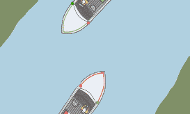
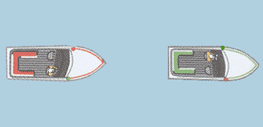

In reality, vessels are either referred to as “Stand On” or “Give Way”. The “Stand On” vessel is required under the regulations to maintain its course and speed while the “Give Way” vessel is required to take such action as will be deemed appropriate to avoid a collision. In general terms however, the adage “Power gives way to Sail” is the basic principle. There are circumstances where this rule does not apply and more detailed reading of the regulations will make this clear.
It is not the intent of this site to provide a definitive interpretation of each rule as it would take a web site in its own right. However, we have shown a range of situations relative to the use of small craft operation.
You can also download IRPCS (International Regulations for Preventing Collisions at Sea) and check out ColRegs (Collision Regulations) for furthermore information.
Power Driven Vessels
Pass “Port to Port” a vessel operating in a river or buoyed channel should with oncoming traffic keep to the starboard (right hand) side.
The overtaking vessel is the “Give Way” vessel and should keep clear of the vessel it is overtaking. The boat being overtaken is the “Stand On” vessel and is required to maintain course and speed.
When two vessels are approaching one another head on, they should alter course to starboard (right) and pass as if they were operating in a river or channel. The alteration of course should be early, clear and substantial so the other vessel is fully aware of the action being taken.

A boat coming from your starboard (right) is the “Stand On” vessel and you should make a clear move to starboard and pass behind the other boat. Where a vessel is coming from your port (left) side then it is the “Give Way” vessel and should make the appropriate move. In the event that the give way vessel does not alter course then you should either slow down, stop or turn to starboard to avoid the collision. DO NOT turn to port!

Source: "https://www.mendezmarine.co.uk/rules-road-international-regulations-prevention-collision-sea/"
Sailboats
When two sailing vessels are on the same tack the vessel on the starboard tack is the stand-on vessel. The vessel on the port tack must give way.

The windward boat is the give way vessel when two sailing vessels are on the same tack. The leeward vessel is the stand on vessel.

Both vessels must turn to starboard to avoid a head on collision. This applies to both sailing vessels and motorboats.

Source: "http://www.lovesailing.net/sailing-theory/sailing-basics/rules-of-the-road/rules-of-sailing.php"